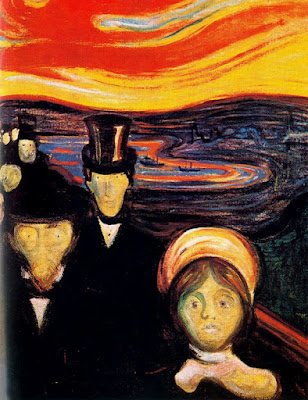

Cómo manejar la ansiedad en tiempos de incertidumbre
La ansiedad es una respuesta natural ante situaciones de estrés, pero cuando se vuelve constante puede afectar nuestra calidad de vida. En este artículo compartimos estrategias efectivas para manejar la ansiedad...
Leer más